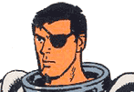

一度観たら忘れられない伝説のトラウマアニメ。
これを観ていただければわかると思うが、口のとこだけ実写なのである。
これが激しく気持ち悪い。よって、これを観たことがあるという人の感想を聞くと、
「口だけ実写なんだよ、キモいよ〜」と口走るばかりで、内容を覚えていない人がほとんど。(私もその一人）
要するにそれだけインパクトがあるということだ。静止画ではこのキモさをお伝えできないのが残念。
1エピソードの時間は5分程度の短いもの。
初回放映年：1959年3月
初回放映チャンネル：Syndication（SYN）
製作会社：Cambria Studios（現在はAnimation Filmmakers Corporationと名を変えたようだが詳細不明）
クリエイター：Clark Haas
やはり60年代に日本公開されているらしいが、詳細不明。
邦題「冒険王クラッチ」
Cartoon Networｋで放映中（字幕版） だったんですが・・・今はやってないみたい（2003/02現在）
| cast | voice | ||
| Clutch | Richard Cotting & Ned LeFebvre | 本編の主人公。白髪で、しゃくれたアゴのナイスガイ。 冒険家・パイロット・作家。 |
|
| Spinner | Margaret Kerry | 少年。弟子？ | |
| Paddlefoot | Margaret Kerry | 犬 | |
| Swampy | Hal Smith | 友人。こきたないヒゲの男 |
この口だけ実写、すなわちクラッチカーゴで使用されるリップシンクロのアニメ技法は、シンクロヴォックス(Syncro-Vox)と言われるもので、製作会社のカンブリア・スタジオが発明。 この技法は特許として申請されている。
クラッチカーゴ以外にも『SPACE ANGEL（邦題：宇宙ライダー エンゼル）』『CAPTAIN FATHOM（邦題：キャプテン・ファドム）』にも使用されているらしい。未放映では「Doc
Potts」なんてのも。
特許を、とはいいながら、もともと予算がほとんどなかったというし、それほど高度な合成技術とも思えない。
なにしろ、確かに唇はしゃべりに合わせて動いてはいるが、肝心のアニメ自体がまったく動かない。
実際の撮影技法がどのようなものかはよくわからなかったが、セルではないことや、動くのは絵ではなくカメラの方といったところから、単に板かなにかに絵を描いて、そこから口を出しているだけのような気がしないでもない。
これが特にキモく感じられる要素に、その喋る口にべっとりと赤い口紅がついていることもあげられる。
これはどうも、口の動きをはっきりみせるために、また絵となじむようにと、とられた手段のようである。（それが成功しているかは別として）
webで調べてると、「画期的な」とか賞賛めいた表現もみえるが、視聴者からの反応は日本と同じ「あったあった、そんなアニメ！狂ってるよ！サイコー」みたいなのもあって、キモく感じているらしいことも。その後この特許で大もうけをしたなんて話もきかないところをみると、リップシンクロにこだわりを見せるアメリカ人でも「ちょっと・・・」といった感じかもしれない。
コナン・オブライエンのレイトショウ（Conan O'Brien's late-night TV show）でも使われていたらしい。
どうも、肖像画が口だけ動いて喋るといったものらしい。うーん、観たことあるかも。
また、「話す動物（talking animal）」のCMにも使われたらしい。
カンブリア・スタジオおよびクラッチカーゴについては「OUTRE magazine 第5号」に詳しいことが載っているらしい。
・・・・らしい、ばかりですいません。
詳細不明。26エピソードあるらしい。また別の情報では52とも。
これはもしかして、2回で1エピソードってことかな？とすると、全26エピソード、52回放映というのが正しいのかも。
内容は私もほとんど覚えていないんですが、タイプ的にはJQ（ジョニークエスト：JONNY QUEST）に近い、世界をまたにかけた冒険活劇ものではないかと。
短いせいもあるが、一話完結型ではなく、連続ものになっている点がちょっと珍しい。
といっても、続けてみてはいないのでなんともいえない。上記のエピソード数の仮説に従うのなら、2回で1エピソードということになりそうだ。
JQも、たのもしい白髪の大人と、少年、犬が登場し、キャラ配置もよく似ている。意識していたとは思うけど、真意不明。
日本語版のタイトルは不明。
うーん、ていうかこの作品自体アニメーションというより実写。
なにしろ絵がアニメーションしない。微妙に手ぶれをおこしているような画面なんで、撮影台においてコマごとにフィルムに納めてゆくものではなく、普通にあるものをそのまんま撮影した実写っぽい。（三脚すらなかったのか？）
日本で言えば、「猫目小僧」がこれに近い。
なにしろ爆発というか衝撃のシーンとかは、絵はそのままでカメラを揺らしてるし、絵が動いていても、一枚絵をずらしてるだけ、といったしろもの。とにかく動くのは口だけなんですよ（笑）。ものすごい低予算番組とみた。
お話もはっきりいってJQのほうが数段おもしろい。というか非常に見続けるのがつらいです。1回話のネタにみればもういいかなあ。とてもじゃないが全52回なんかぶっ続けにみるなんてことになったら拷問かも。
キャラクターは見事にその時代のおきまりって感じですね。
大人、それにくっつく子供。そして動物。
JQもそうなんですが、「電光石火バットマン」や「宇宙怪人ゴースト」もこのパターンか。
今じゃそうでもないけど、このパターンてのはその時代けっこう流行ったのかもしれないね。
同様なものに「SPACE ANGEL」というスペオペものがあるが、こちらは未見。
ただ、これのキャラデザインは「スペースゴースト」と同じあのAlex Tothなので、すげえカッコイイのだが、これがアニメになると、見事に台無し・・・・・（涙）
これが・・・・・・・≫≫（泣）